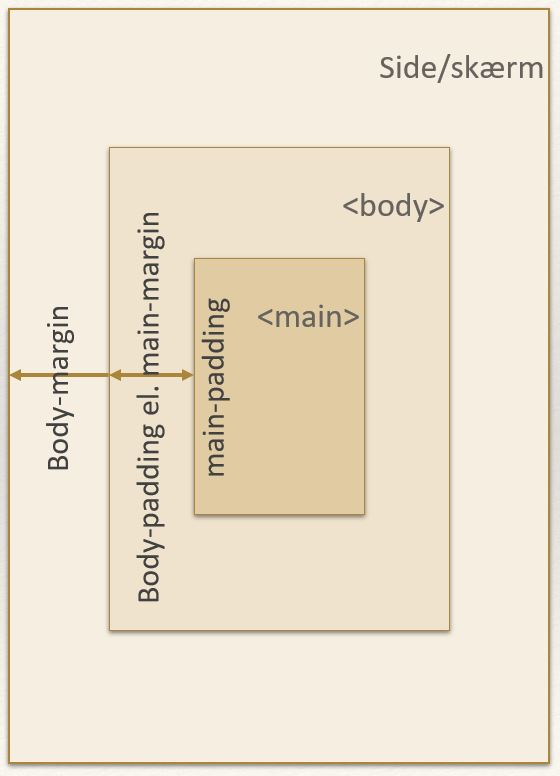
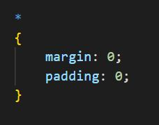
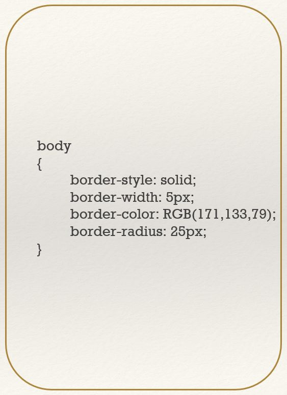
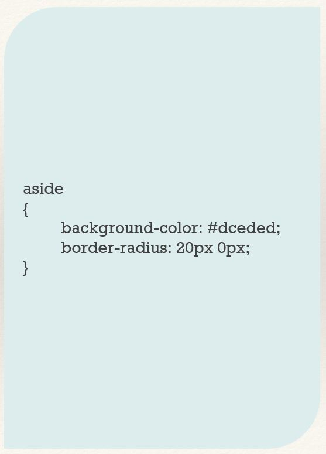

Margin og Padding
Hvis du tænker på dine HTML-elementer som kasser, så er margin den luft, der er udenfor kassen og padding er den luft, der er inden i kassen (imellem kassens kant og indholdet i kassen - indholdet i kassen kan enten være tekst, billede eller et andet HTML-tag).
Alle browsere har et default stylesheet, som de anvender, hvis din side ikke har et stylesheet eller ikke overskriver de attributter, som står i browserens stylesheet. Browserens stylesheet sætter bl.a. skriftstørrelser, fed skrift i overskrifter, indrykning i punktopstillinger og margener i både top, bund, venstre og højre side.
Især standard margenerne kan godt give udfordringer, når du vil have din side til at se ud på en bestemt måde. Mange har fx en menulinje som fylder hele bredden, og det vil man ikke kunne, hvis ikke man har fjernet browserens standard margener.
Derfor anbefales det, at man altid starter sit stylesheet med at nulstille alle margener og paddinger, for ikke at støde ind i problemer med dette undervejs. Det øverste element på en HTML-side er HTML-tags'ene. Dette kaldes også root element og kan i CSS også skrives som en stjerne (*) - og ofte kaldes denne nulstilling for et root reset. Så for at nulstille alle margener og paddings på din side, bør alle dine stylesheets starte med følgende kode:
Du kan enten sætte dine margener enkeltvis, flere ad gangen eller alle på en gang:
- margin-bottom: 20px;
- margin-top: 10%;
- margin-left: 300px;
- margin-right: 20%;
- margin: 20px 15px 30% 30px (angiver margen for top, højre, bund, venstre)
- margin: 20px 15px 30px (angiver margen for top = 20px, højre/venstre = 15px, bund = 30px)
- margin: 20px 15px (angiver margen for top/bund = 20px, højre/venstre = 15px)
- margin: 20px (angiver margen for alle fire sider = 20px)
Du kan angive dine paddings på samme måde, som du lige har læst om margener.
Rammer
Du kan sætte rammer rundt om dine HTML-elementer ved at bruge attributten "border".
Du kan angive rammens type (stiplet, solid, prikket og andre typer) med attributten border-style.
Du kan angive rammens tykkelse (i px eller %) med attributten border-width.
Du kan angive rammens farve (i hex eller rbg) med attributten border-color.
Du kan også angive det hele på en gang med attributten "border":
- border: 5px solid red;
- border-left: 5px solid blue;
- border-bottom: 2px dashed rgb(120, 42, 28);

Afrundede rammer eller kanter
Med border-radius kan du angive at rammer eller kanter skal være afrundede. Værdien kan angives enten i pixels eller i procent. Eksperimentér lidt med de forskellige værdier for at finde den afrunding, som passer til din side.
Du kan specificere din afrunding på hvert enkelt hjørne:
- border-top-left-radius: 10px;
- border-top-right-radius: 15px;
- border-bottom-right-radius: 20%;
- border-bottom-left-radius: 25%;
- border-radius: 10px 15px 20px 25px (her angives øverste venstre (10px), øverste højre (15px), nederste højre (20px), nederste venstre (25px))
- border-radius: 10px 15px 20px (her angives øverste venstre (10px), øverste højre og nederste venstre (15px), nederste højre (20px))
- border-radius: 10px 20px (her angives øverste venstre og nederste højre (10px), øverste højre og nederste venstre (20px))
- border-radius: 20px (her angives 20px på alle fire hjørner)
Du kan også angive afrundede hjørner på et område, som ikke har en ramme, men som har en baggrundsfarve. Så vil din border-radius vise sig i din baggrundsfarve:
Border-radius kan også bruges på billeder, som så vil få afrundede hjørner.
Størrelser
Du kan angive størrelser på dine elementer med width (bredde) og height (højde).
Størrelsen kan ligesom med andre størrelser angives i px eller %. I forbindelse med størrelser af elementer, er der dog også to andre enheder, som bliver interessant:
- Viewport Width - som forkortes vw
- Viewport Height - som forkortes vh
På samme måde svarer 100vh (viewport height) til 100% af din skærms højde, og 1vh svarer til 1% af din skærms højde.
Dette er relevant i forhold til at lave websider, som både kan vises på en desktop skærm og en mobilskærm. Det man kalder responsive websider.
Hvis du har angivet en bredde i pixels, vil dette være en fast bredde, som dit element har, uanset om din bruger sidder på en 1920 x 1080 skærm, eller om din bruger sidder på en 360 x 760 mobilskærm.
Hvis du fx har et billede, som ser rigtigt god ud på din desktop skærm, når det er 500px bredt, så vil det give sidescrolling (horisontal scrolling) på en mobiltelefon, som kun er 360px bred. Og hvis der er noget, vi synes er træls, så er det sidescrolling ;)
Derfor kan man fx angive, at et billede skal fylde 50vw (viewport width). Så fylder det altid halvdelen af skærmen, uanset om man ser det på en mobil, tablet, bærbar eller desktop skærm.
Men er viewport width så ikke bare det samme som procent?
Jo, i nogle tilfælde er det. Forskellen er, at bredde i procent er afhængigt af det overliggende elements bredde. Hvis du har et billede, der ligger i din main, og din main er sat til at fylde 2/3 af din skærms bredde, så vil dit billede med en bredde på 50% kun komme til at fylde 50% af main's bredde.
Centreret indhold
Hvis du har angivet en bredde på et element, kan du centrere elementet ved at sætte elementets margener til 50%.
Fælles opgave - margins, paddings og rammer
Start med at lave dit root reset af al margin og padding.
Din header og footer skal være 50px høje og have baggrundsfarven tomato. Tekst i header og footer skal centreres.
Main området skal være 1000px bredt og centreres.
Alle billeder skal være 300px brede og have afrundede hjørner på 10px.
Linjehøjden sættes i body'en til at være 1.8.
Linjehøjden sættes i header og footer til at være 50px. Det er en nem måde at centrere din tekst lodret.
h1'ere og h2'ere skal have en margen på 20px i top og bund.
p afsnit skal have en margen på 40px i bunden.
Punktopstillinger skal have flyttet punkttegnet ind i dit main-område. Når punkttegnet er endt udenfor main-området, så er det fordi, punktopstillinger som standard har sat attributten list-style-position: outside. For at ændre dette skal du på ul sætte list-style-position: inside;
Teksten i header og footer skal være i store bogstaver og skriftstørrelsen skal være 20px. Prøv at sætte skriftfarven til hvid i header og footer. Slår det igennem? Det snakker vi om i næste lektion.
Videre med dit fugleleksikon
Du skal nu arbejde videre på dit fugleleksikon. Brug de attributter, som du har lært i løbet af i dag, til at gøre din side pæn og interessant. Sæt fx en fast bredde på siden og sørg for at centrere den. Eksperimentér med rammer og border-radius på forskellige elementer på din side.